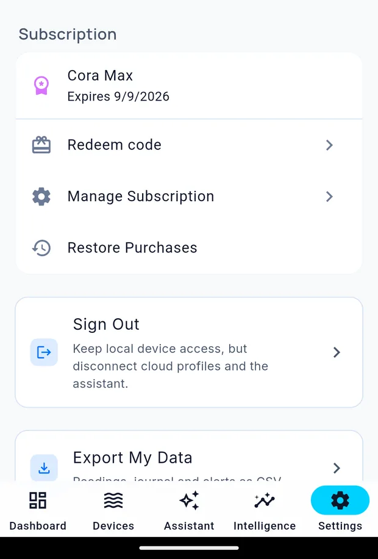

Plans
Cora's core is free: tanks, dashboards, devices, alerts, journal, maintenance and livestock. The paid plans add the intelligence — the Assistant, Reef Buddy, ICP analysis and health reports — with more of each as you go up.
Settings → your account opens Account & Subscription.

It shows your current plan and when it renews, plus:
| Control | Does |
|---|---|
| Redeem code | Applies a promotional or partner code |
| Manage Subscription | Opens your store's subscription settings |
| Restore Purchases | Re-applies a purchase made on another device, or after reinstalling |
Seeing what you have used
Each metered feature shows its own usage where you use it:
- Assistant — messages this month, above the message box
- Intelligence — ICP and health reports this month, under the buttons
Those counters are the honest answer to "am I about to run out?".
Changing plan
Use Manage Subscription. Changes go through the App Store or Google Play and follow the same rules as any other subscription on your device, including that store's refund and cancellation terms.
Cancelling
Cancel through the App Store or Google Play, not in Cora. Your plan runs to the end of the period you have paid for, then drops back to free.
If your plan is not showing
Purchases occasionally take a moment to reach the app. If it has been a few minutes:
- Fully close and reopen Cora
- Check you are signed in to the same account that made the purchase
- Check the store account on your device is the one you bought with
If it still has not appeared, tap Restore Purchases. Failing that, email cora@coraiq.tech with the date of purchase.
Written for Cora Max 0.28.28 and Cora Mobile 0.5.52.
Still stuck? Email cora@coraiq.tech and we'll help.